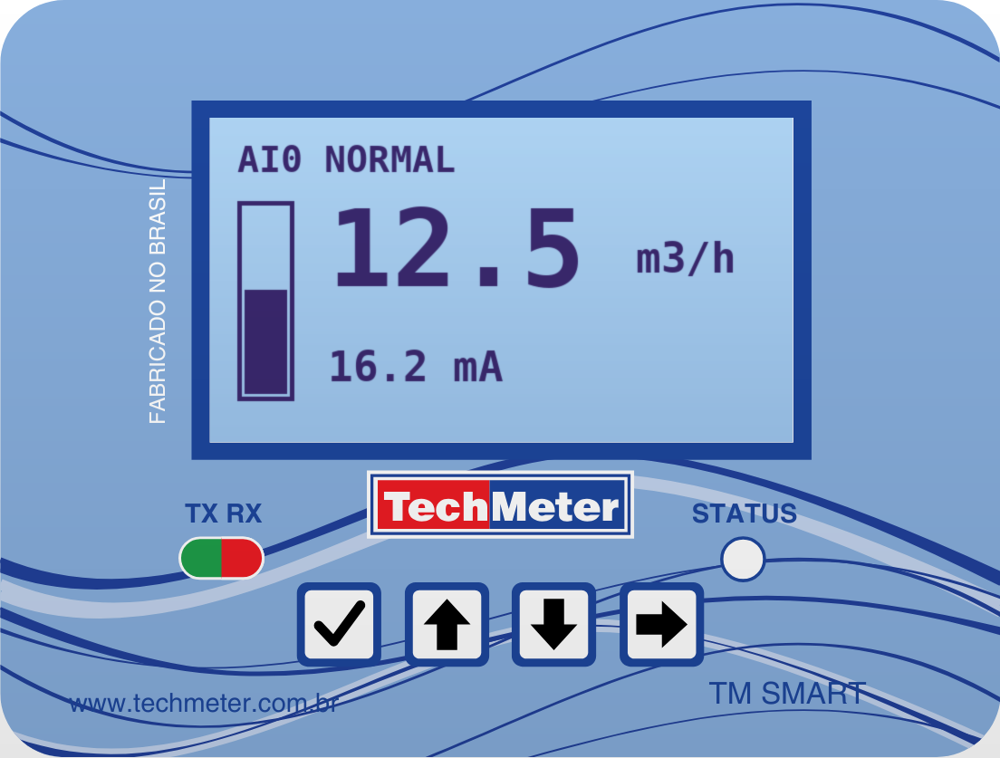

O TM-Smart recebe o sinal de 4-20 mA de um transmissor de campo (nível, vazão, pressão ou temperatura), converte esse sinal para a unidade de engenharia do processo e disponibiliza a medição de quatro formas ao mesmo tempo: no display, numa saída 4-20 mA de retransmissão, em duas saídas de alarme e por comunicação Modbus RTU (RS485 e Bluetooth).
Além de indicar, o equipamento totaliza vazão e pode calcular a vazão em canais abertos ou o volume em tanques a partir de um sensor de nível que não faz esse cálculo sozinho.
O invólucro tem duas opções de fixação:
Escolha um local protegido de sol direto e de respingos constantes, com acesso fácil ao display e às teclas. Deixe o prensa-cabo voltado para baixo.
O invólucro tem grau de proteção IP67 e o equipamento trabalha com temperatura ambiente de até 60 °C.
Os cabos entram pelo prensa-cabo, na parte de baixo do invólucro, e são ligados na régua de bornes interna:
| Borne | Ligação |
|---|---|
| 1 · 2 | Alimentação 12 a 36 Vcc: (1) positivo, (2) negativo |
| 3 | Sem ligação |
| 4 · 5 | RS485: (4) linha A, (5) linha B |
| 6 | Entrada de sinal 4-20 mA |
| 7 · 8 | Saída de retransmissão 4-20 mA: (7) positivo, (8) negativo |
| 9 · 10 | Alarme 1: (9) contato NA, (10) comum |
| 11 · 12 | Alarme 2: (11) contato NA, (12) comum |
Ligue uma fonte de 12 a 36 Vcc nos bornes 1 (positivo) e 2 (negativo). Coloque uma proteção contra sobrecorrente, como fusível ou disjuntor, entre a fonte e o equipamento.
O sinal do transmissor entra no borne 6. A corrente é medida sobre um resistor de precisão, e o conversor A/D tem compensação de referência.
A saída dos bornes 7 e 8 é passiva: quem alimenta o laço de corrente é o equipamento receptor (CLP, registrador ou supervisório). Não é preciso ligar fonte em série do lado do TM-Smart.
Os dois alarmes são contatos de estado sólido (photoMOS), normalmente abertos, isolados e sem polaridade: alarme 1 nos bornes 9 e 10, alarme 2 nos bornes 11 e 12.
O TM-Smart funciona como escravo Modbus RTU nos bornes 4 (A) e 5 (B).
O módulo Bluetooth de baixa energia já vem integrado e funciona como uma segunda porta Modbus, usada pelo aplicativo configurador. Não há ligação elétrica a fazer. Para o aplicativo conectar bem, evite peças metálicas encostadas no topo do invólucro, onde fica a antena.

Na energização, o display mostra a tela de abertura (VALIDAR: logomarca exibida no firmware Techmeter) e, em seguida, a tela de medição. Se a memória estiver vazia, ou se uma atualização de firmware tiver mudado a estrutura da configuração, o equipamento carrega e grava os padrões de fábrica sozinho.
| Tecla | Na tela de medição | Dentro dos menus |
|---|---|---|
| ✓ Confirmar | Abre o menu de configuração | Entra no item ou confirma o valor |
| ↑ Incrementar | — | Sobe na lista ou aumenta o valor |
| ↓ Decrementar | — | Desce na lista ou diminui o valor |
| → Avançar | Troca a tela principal | Volta ou cancela a edição |
A tecla → alterna entre as quatro telas abaixo. A tela escolhida fica gravada e também pode ser definida em SISTEMA › TELA PRINCIPAL.
| Tela | O que mostra |
|---|---|
| TELA MEDIDA | Status da entrada, valor de processo com unidade, barra de porcentagem da faixa e corrente de entrada |
| TELA TOTAL | Totalizador parcial e totalizador permanente |
| TELA CORRENTE | Corrente de entrada, em mA |
| TELA GERAL | Resumo: valor de processo, total e corrente |
O valor de processo é a medição em unidade de engenharia. Quando uma aplicação hidráulica está ativa, ele passa a ser a vazão ou o volume calculado.
Na tela de medição, pressione ✓ para abrir o menu principal:
| Menu | Para que serve |
|---|---|
| STATUS AI0 | Diagnóstico da entrada: status, valor bruto do A/D, corrente e valor de engenharia |
| ENTRADA ANALOGICA | Unidade, faixa, casas decimais, filtro, calibração e totalizador |
| APLICACAO | Aplicações hidráulicas (calhas, vertedouros e tanques) |
| SAIDA 4-20MA | Retransmissão: fonte, faixa, falha, calibração e teste |
| ALARMES | Modo, setpoint e histerese dos alarmes AL0 e AL1 |
| COMUNICACAO | Endereço Modbus e velocidade da RS485 |
| SISTEMA | Tela principal, contraste, informações e reset |
Todo valor confirmado é gravado na hora, na memória FRAM.
| Item | Função | Faixa | Padrão |
|---|---|---|---|
| UNID MEDIDA | Unidade da medição: %, L/S, L/MIN, L/H, M3/H, BAR, MCA, M, °C, MM | — | % |
| VAL 4MA | Valor de engenharia em 4 mA | — | 0,0 |
| VAL 20MA | Valor de engenharia em 20 mA | — | 100,0 |
| RESOLUCAO | Casas decimais da medição | 0 a 3 | 1 |
| DUMP | Filtro: número de amostras da média móvel | 1 a 32 | 8 |
| CAL 4/12/20MA | Calibração da entrada em 3 pontos | — | de fábrica |
| TOTALIZADOR | Liga ou desliga a totalização | LIGADO / DESLIGADO | LIGADO |
| RES TOTAL | Casas decimais dos totalizadores | 0 a 3 | 2 |
| ZERAR TOTAL | Zera o totalizador parcial (pede confirmação) | — | — |
Ligue um calibrador de corrente na entrada. Em CAL 4MA, injete exatamente 4,00 mA. A tela mostra o valor bruto do A/D em tempo real; pressione ✓ para registrar o ponto. Repita com 12,00 mA em CAL 12MA e com 20,00 mA em CAL 20MA.
| Item | Função | Faixa | Padrão |
|---|---|---|---|
| FONTE | DESLIGADA, FAIXA ENG (faixa própria) ou ESPELHO MA (repete a corrente de entrada) | — | FAIXA ENG |
| VAL 4MA | Valor de engenharia que corresponde a 4 mA na saída | — | 0,0 |
| VAL 20MA | Valor de engenharia que corresponde a 20 mA na saída | — | 100,0 |
| MODO FALHA | O que a saída faz se a entrada falhar: vai a 3,8 mA ou segue o valor limitado em 4-20 mA | — | 3,8 MA |
| CAL 4MA / CAL 20MA | Calibração da saída em 2 pontos | 0 a 4095 | de fábrica |
| TESTE SAIDA | Força um valor fixo de corrente para testar a malha | 3,80 a 21,00 mA | — |
Coloque um miliamperímetro no laço da retransmissão. Em CAL 4MA, ajuste com ↑/↓ até o instrumento marcar 4,00 mA e confirme com ✓. Faça o mesmo em CAL 20MA para 20,00 mA. Durante o ajuste, a saída acompanha o valor em tempo real.
Os dois alarmes (AL0 e AL1) têm os mesmos três ajustes:
| Item | Função | Faixa | Padrão |
|---|---|---|---|
| MODO | DESLIGADO, ALTO (atua acima do setpoint), BAIXO (atua abaixo do setpoint) ou MODBUS (comandado pelo mestre) | — | DESLIGADO |
| SETPOINT | Valor de atuação, na unidade do valor de processo | — | 100,0 |
| HISTERESE | Faixa de retorno, para o alarme não ficar ligando e desligando | ≥ 0 | 1,0 |
| Item | Função | Faixa | Padrão |
|---|---|---|---|
| MODBUS ID | Endereço do equipamento na RS485 | 1 a 247 | 1 |
| BAUDRATE | Velocidade: 9600, 19200, 38400, 57600 ou 115200 bps | — | 9600 |
Esses ajustes valem só para a RS485. A porta Bluetooth tem configuração fixa e responde a qualquer endereço.
| Item | Função |
|---|---|
| TELA PRINCIPAL | Define a tela de medição: MEDIDA, TOTAL, CORRENTE ou GERAL |
| CONTRASTE | Contraste do display (0 a 63), aplicado na hora |
| INFO FABRICANTE | Contato do fabricante (VALIDAR: dados Techmeter no firmware) |
| INFO SISTEMA | Endereço Modbus, velocidade e diagnóstico interno |
| RESET CONFIG | Volta a configuração de fábrica (pede confirmação) |
Com uma aplicação hidráulica ativa, o TM-Smart vira um conversor de vazão para canal aberto, ou de volume para tanques. Ele faz o cálculo a partir do nível medido por um sensor simples, como um radar 4-20 mA sem display.
| Item | Função |
|---|---|
| TIPO APLICACAO | DESLIGADA (medição direta) ou uma das 9 aplicações da tabela abaixo |
| PARAMETRO 0 a 5 | Medidas da aplicação escolhida. A unidade aparece na tela, e os parâmetros que a aplicação não usa mostram NAO USADO. |
| UNID VAZAO | L/s, L/min, L/h, m³/s, m³/min, m³/h, gal/s, gpm, gph |
| UNID VOLUME | L, m³, gal |
| Aplicação | Calcula | Parâmetros |
|---|---|---|
| TAN CIL FUN RETO | Volume | P0 = diâmetro do tanque (mm, mínimo 300) |
| TAN CIL FUN CON. | Volume (cilindro + cone no fundo) | P0 = diâmetro do cilindro · P2 = altura do cone · P3 = diâmetro do fundo (mm) |
| TAN RET VER RETO | Volume | P0 = largura · P1 = comprimento (mm) |
| TAN RET VERT CA. | Volume (retângulo + calha trapezoidal) | P0 = largura · P1 = comprimento · P2 = profundidade da calha · P3/P4 = fundo da calha (mm) |
| CALHA PARSHALL | Vazão (Q = K·hᵘ) | P1 = garganta (lista: 1, 2, 3, 6, 9, 12, 18, 24, 36, 48, 60, 72, 84, 96, 120 pol) · P5 = zero hidrométrico (0 a 10000 mm) |
| VERT TRAPEZOIDAL | Vazão (Cipolletti generalizado) | P0 = ângulo das laterais (10 a 100°) · P1 = largura da soleira (500 a 15000 mm) · P5 = zero hidrométrico (mm) |
| VERT TRIANGULAR | Vazão | P1 = ângulo do entalhe (20 a 100°) · P5 = zero hidrométrico (mm) |
| VERT. THOMSON | Vazão (entalhe fixo de 90°) | P5 = zero hidrométrico (mm) |
| CALHA PALMER | Vazão | P1 = diâmetro (lista: 4, 6, 8, 10, 12, 18 pol) · P5 = zero hidrométrico (0 a 5000 mm) |
O totalizador sempre soma a vazão real calculada. A faixa definida na saída 4-20 mA limita só o sinal retransmitido, não a totalização:
Os totais são gravados na memória FRAM alternando entre duas posições. Se faltar energia bem na hora da gravação, o equipamento recupera o último valor válido quando religar.
O TM-Smart responde como escravo Modbus RTU em duas portas, com o mesmo mapa de registradores:
Funções aceitas: 01 (ler coils), 03 (ler holding registers), 05 (escrever coil), 06 (escrever um registrador) e 16 (escrever vários registradores). Mensagens para o endereço 0 (broadcast) executam escritas sem resposta, nas duas portas.
| Reg. | Conteúdo | Acesso | Formato / faixa |
|---|---|---|---|
| 0–1 | Valor de processo (engenharia, ou vazão/volume com aplicação ativa) | L | int32 ×1000 |
| 2–3 | Corrente de entrada | L | int32 ×1000 (mA) |
| 4 | Valor bruto do A/D, filtrado | L | uint16 |
| 5 | Status da entrada | L | 0 = OK · 1 = desativada · 2 = abaixo da faixa · 3 = acima da faixa · 4 = erro do A/D |
| 6–7 | Total parcial | L | uint32 ×100 (L) |
| 8–9 | Total permanente | L | uint32 ×100 (L) |
| 10 | Unidade de engenharia | L/E | 0 = % · 1 = L/s · 2 = L/min · 3 = L/h · 4 = m³/h · 5 = bar · 6 = mca · 7 = m · 8 = °C · 9 = mm |
| 11 | Casas decimais da medição | L/E | 0 a 3 |
| 12 | Filtro (amostras da média) | L/E | 1 a 32 |
| 13 | Identificação da família | L | 0x504B |
| 14 | Versão do mapa Modbus | L | 1 |
| 15 | Reservado | L | lido como 0 |
| 16–17 | Engenharia em 4 mA (entrada) | L/E | int32 ×1000 |
| 18–19 | Engenharia em 20 mA (entrada) | L/E | int32 ×1000 |
| 20 · 21 · 22 | Calibração da entrada: valor bruto em 4, 12 e 20 mA | L/E | uint16 |
| 23 | Fonte da retransmissão | L/E | 0 = desligada · 1 = faixa de engenharia · 2 = espelho da corrente |
| 24–25 | Retransmissão: engenharia em 4 mA | L/E | int32 ×1000 |
| 26–27 | Retransmissão: engenharia em 20 mA | L/E | int32 ×1000 |
| 28 | Modo de falha da entrada | L/E | 0 = segue limitado · 1 = vai a 3,8 mA |
| 29 | Teste de saída habilitado | L/E | 0/1 (não fica gravado) |
| 30 | Valor do teste de saída | L/E | µA, 3800 a 21000 |
| 31 | Corrente atual da saída | L | µA |
| 32 · 33 | Calibração da saída: código do DAC em 4 e 20 mA | L/E | 0 a 4095 |
| 34 | Modo do alarme AL0 | L/E | 0 = desligado · 1 = alto · 2 = baixo · 3 = Modbus |
| 35–36 | Setpoint de AL0 | L/E | int32 ×1000 |
| 37–38 | Histerese de AL0 | L/E | int32 ×1000, ≥ 0 |
| 39 | Modo do alarme AL1 | L/E | igual ao AL0 |
| 40–41 | Setpoint de AL1 | L/E | int32 ×1000 |
| 42–43 | Histerese de AL1 | L/E | int32 ×1000 |
| 44 | Estado dos alarmes | L | bit 0 = AL0 · bit 1 = AL1 |
| 45 | Totalizador habilitado | L/E | 0/1 |
| 46 | Casas decimais do total | L/E | 0 a 3 |
| 47 | Endereço Modbus (RS485) | L/E | 1 a 247 |
| 48 | Velocidade da RS485 | L/E | 0 = 9600 · 1 = 19200 · 2 = 38400 · 3 = 57600 · 4 = 115200 |
| 49 | Versão do firmware | L | BCD (0x0200 = 2.00) |
| 50 | Comando | E | 1 = zera total parcial · 2 = zera os dois totais · 3 = reset de fábrica |
| 51 | Contraste do display | L/E | 0 a 63 |
| 52 | Tela principal | L/E | 0 = medida · 1 = total · 2 = corrente · 3 = geral |
| 53–54 | Diagnóstico da porta Bluetooth | L | contadores internos |
| 55 | Aplicação hidráulica habilitada | L/E | 0 = medição direta · 1 = ativa |
| 56 | Aplicação ativa (índice) | L/E | 0, 1, 2, 3, 9, 12, 14, 15, 17 (outros são recusados) |
| 57–62 | Parâmetros P0 a P5 da aplicação ativa | L/E | dentro dos limites da aplicação |
| 63 | Unidade de vazão | L/E | 0 = L/s · 1 = L/min · 2 = L/h · 3 = m³/s · 4 = m³/min · 5 = m³/h · 6 = gal/s · 7 = gpm · 8 = gph |
| 64 | Unidade de volume | L/E | 0 = L · 1 = m³ · 2 = gal |
| 65–66 | Altura da lâmina de líquido | L | int32 ×1000 (mm) |
| 67–68 | Vazão real (sem o limite da retransmissão) | L | int32 ×1000 (L/s) |
| 69–70 | Volume | L | int32 ×100 (L) |
L = leitura · E = escrita · L/E = leitura e escrita.
| Coil | Conteúdo |
|---|---|
| 0 | Comando do alarme AL0 (vale com o alarme em modo Modbus) |
| 1 | Comando do alarme AL1 (idem) |
Pelo aplicativo para Android (VALIDAR: nome do aplicativo e onde o cliente Techmeter baixa), é possível ver a medição e ajustar todos os parâmetros por Bluetooth, sem abrir o invólucro: entrada, retransmissão, alarmes, comunicação e aplicações hidráulicas.
| Característica | Especificação |
|---|---|
| Display | LCD gráfico 128×64, contraste ajustável |
| Teclado | 4 teclas frontais |
| Sinalização | LED bicolor (verde = normal, vermelho = alarme ou falha) e LEDs de comunicação TX/RX |
| Entrada | 4-20 mA, calibração em 3 pontos |
| Retransmissão | 4-20 mA passiva (alimentada pelo laço), calibração em 2 pontos |
| Alarmes | 2 saídas em estado sólido (photoMOS), NA |
| Comunicação | Modbus RTU escravo: RS485 (9600 a 115200 bps, 8N1) e Bluetooth BLE |
| Memória | FRAM, sem bateria; totais protegidos contra queda de energia |
| Alimentação | 12 a 36 Vcc |
| Temperatura de operação | até 60 °C |
| Dimensões | 101 × 78 × 45 mm; fixação em parede ou tubo |
| Grau de proteção | IP67 |
| Versão deste manual | Firmware 2.00 |